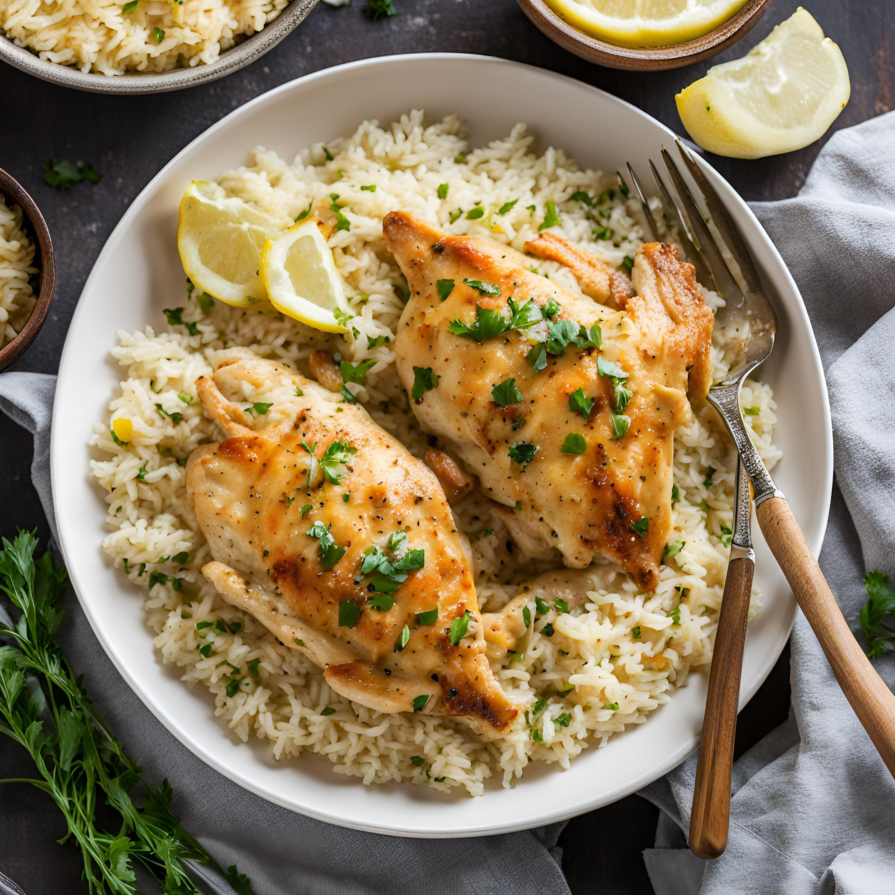

Creamy Garlic Butter Chicken with Rice

The image above is of a garlic chicken dish served over rice.
The recipe is quite simple to make and takes little time.
Ingredients
- 2 chicken breasts (or thighs)
- 3 cloves garlic (minced)
- 1 cup cooking cream
- 2 tbsp butter
- 1 tbsp oil
- Salt & pepper
- 1 cup rice
- Optional: spinach or mushrooms
Steps
- Cook rice separately and set aside.
- Season chicken with salt & pepper.
- Heat oil + 1 tbsp butter →
cook chicken until golden (5–7 mins each side). Remove.
- In same pan, add garlic → cook 30 seconds.
- Add cream + remaining butter → simmer.
- Return chicken → cook 5 mins until coated.
- Add spinach/mushrooms if using.
- Serve over rice.
Home